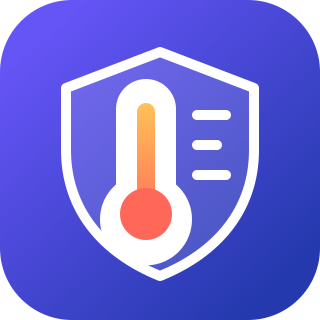

Backend Engineering
Java, Spring Boot, REST APIs, Microservices, Robust Design
Hello, I'm Dinesh Kumar
Technical Lead Backend Architecture Cloud Engineering AI & GenAI
13+ years of experience designing and building scalable, reliable, and maintainable software systems. I lead end-to-end engineering delivery, from architecture and development to production and scale.
A balanced blend of system design, hands-on development, and modern engineering practices.
Java, Spring Boot, REST APIs, Microservices, Robust Design
Scalable, resilient, secure, and maintainable systems
AWS, Azure, Docker, CI/CD, Terraform, Automation
PostgreSQL, Redis, Optimization, Caching, Reliability
Exploring LLMs, RAG, Agents, and practical AI applications
Real-world products and engineering work, from concept to implementation.

TempGuardWindows thermal monitoringAuthentic application screenshot neededA lightweight Windows tray utility for CPU and GPU temperatures, thermal alerts, process visibility, and guarded task control.
Architecture principles, system design, and engineering explorations in scalable, reliable, and maintainable software.
Hands-on experiments with LLM applications, retrieval-augmented generation, agent workflows, and evaluation.
Active exploration
Client and system details are summarized where work is confidential.
Principles that guide how I design, build, and deliver software.
Build clean, modular, and evolvable systems.
Use data, metrics, and real insights to make better decisions.
Focus on reliability, security, observability, and scale from day one.